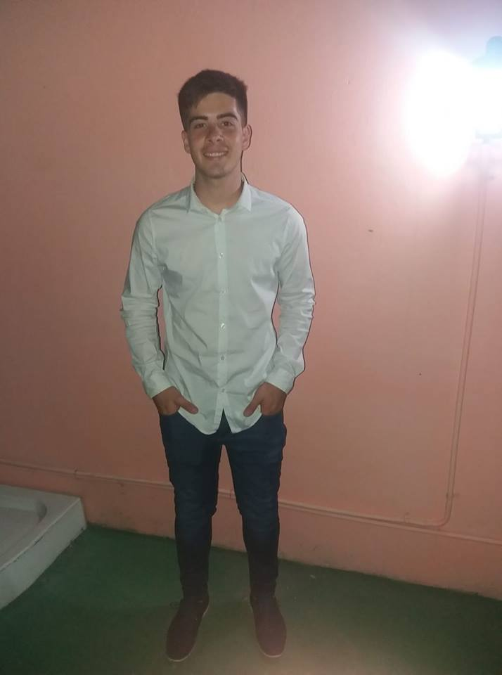

Direccion: Remedios de escalada de San Martin, 135. Tortuguitas.

Educación
Tecnico Informatico Profesional y personal.
2011-2017. Escuela Tecnica n°3
Montaje y Administracion de redes informaticas.
2017-2018. I.A.C (Instituto Argentino de Computacion.)
Experiencia Profesional
Mc Donald's
2016-Actualidad.
Objetivos profesionales
Mi objetivo profesional es desarrollarme en el area de programacion web, ya que tengo conocimientos, me apasiona y dia a dia me perfecciono cada vez mas con conocimientos a traves de cursos. Tambien uno de mis objetivos es realizar la carrera de Licenciado en ciencias de la Computacion. Tengo experiencia en realizar aplicaciones web, los lenguajes que domino son: html5, css, javaScript, php. Tengo conocimientos en normalizacion de base de datos.